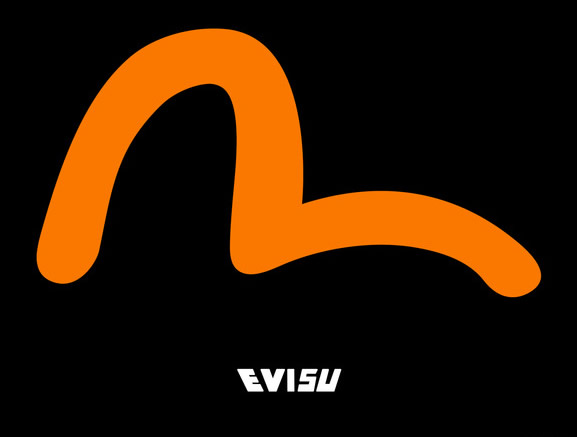

|
EVISU牛仔是乾玺贸易（上海）有限公司旗下品牌。日本"东京大阪"品牌。由设计师山根英彦一手创的人气街头牛仔品牌， 目前在欧洲造成时尚界瞩目的EVISU，一直是台湾街头品味人士期待引进品牌，于91年成立Evisu，以裤后袋的M″字图案作标志，原来这M″字图案是蜕变自Levi's的后袋车花。 EVISU 是引进日本优质镶边牛仔布及定制式做旧细节的原创牛仔品牌。 EVISU于1991年在日本大阪创立，名字的灵感来自日本神话中的海神EBISU惠比寿。 品牌初期每天只能制成约14条牛仔裤，而每一条裤子都由人手绘上著名的海鸥标记。 EVISU吸引了痴迷细节和复古牛仔的日本时尚一族，并将其传播到世界各地。 今天，EVISU除了在市场上获得一致好评外，更在国际上受到收藏家及时尚人士的爱戴，为牛仔必备品之一。 EVISU的初衷是热爱原创多于商业发展，尽管在市场上得到空前成功，品牌始终坚守创造最高品质的产品的使命。 这种根深蒂固的核心价值正是EVISU在牛仔服装历史上成为经典的原因。 EVISU 于1991年在日本大阪创立，名字的灵感来自日本神话中的海神EBISU惠比寿（亦称惠比须、夷，日语：えびす）。品牌最初每天最多只能制作约十四条牛仔裤，并由人手在每条牛仔裤的后袋绘上海鸥图样，亦因为这份对牛仔裤的热爱及对细节一丝不苟的态度，令EVISU很快便被有着极高要求的日本时尚界所喜爱，而且更掀起了一股席卷全世界的古着牛仔裤热潮。EVISU 二十年来的坚持及专注，为品牌赢尽口碑及好评，成为不少牛仔裤收藏家及潮流人士的喜爱。享誉国际的同时，并没有减少品牌对质量的严格要求，而匠心独具的核心价值早已经深根底固，更成为牛仔裤史上的一个经典。 品牌创始期正逢VINTAGE JEANS大热，EVISU成了“后501年代”的代表，原汁原味的古典牛仔裤元素和时髦的街头风格使其迅速成名并成为日本顶级牛仔裤品牌。其后推出的国际版在欧美同样取得巨大成功，贝克汉姆、CRAIG DAVID、ALL SAINTS这样的大牌身穿EVISU衫的醒目照片亦时时见诸媒体。 YAMANE的设计除了忠于古董款原著之外，还充满了幽默感和颠覆精神，并且无论销售业绩多少，仍旧坚持着极小的产量以及大量的手工制作感。这使得收藏EVISU在VINTAGE JEANS迷之间渐渐有了意义。 2003年底，HIDEHIKO YAMANE曾经接受《城市画报》的专访，回忆当初创作古典旧款牛仔裤的情形：“当时做出的牛仔裤当然没有现在所能做到的那么完美，但是整个过程都充满乐趣。其实，现在看到的很多元素，都是源自当初随意的一个念头――比如这个海鸥形的标志，就是牛仔裤的整个工序完成之后，我觉得少了点什么，于是在后袋上随手画了个海鸥，简直有点胡乱涂鸦的意思。起初每一条裤子上的海鸥标记都是我亲手画的……我对古典旧款牛仔裤以至关于它的一切细节走火入魔，比如布料质感、布卷标、后袋形状、撞钉、车线纹路……所有和制作古典旧款牛仔裤相关的技术我都非常感兴趣。不过这些技术都已是40年前的事情，在我之前似乎也没有人去关心，要找回来的确花了一些时间……” |